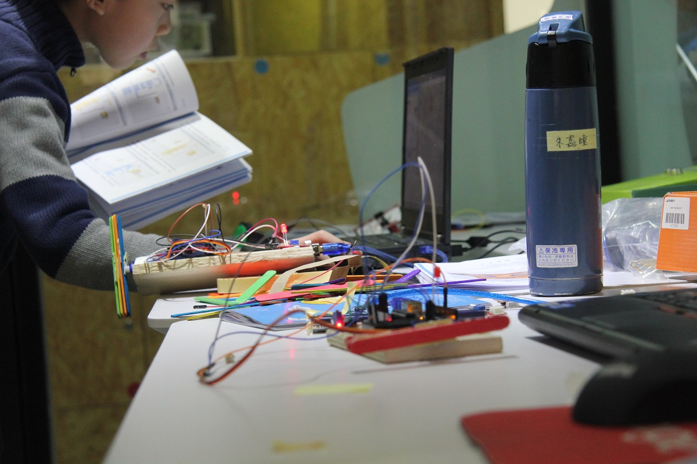
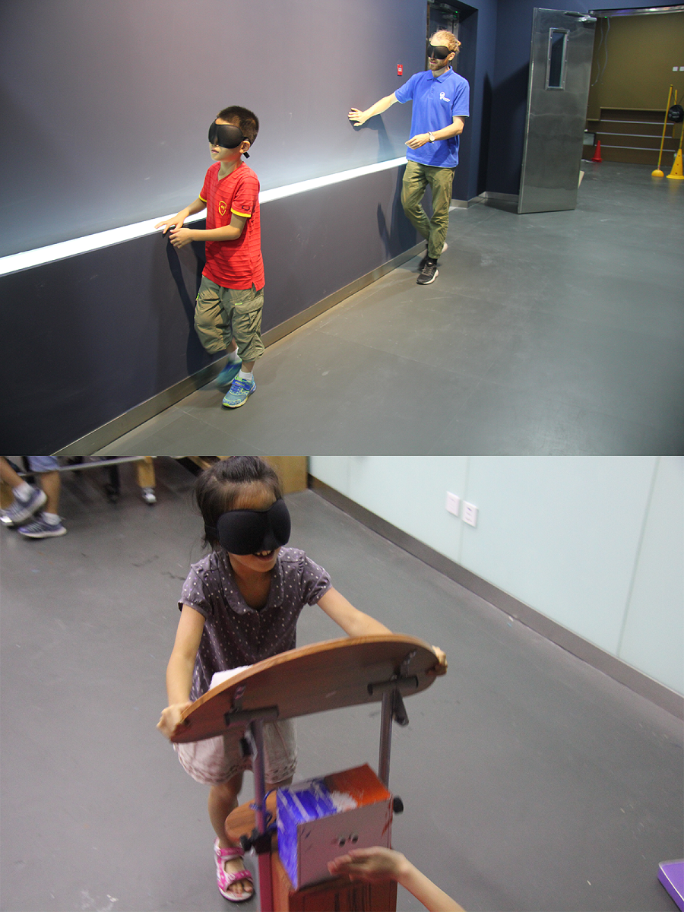

玩家教育 Gamified Learning Environments
Role: Project Manager, CTO
Context: R&D within Creatica Labs
Time: November 2016 to August 2017
Team: Co-workers at Creatica Labs in Beijing
When first working as a consultant for Creatica酷课创意教育 in 2015, I helped develop a new curriculum standard for maker classes. However, when returning as a full-time employee in late 2016, I was asked to reinvent the way of teaching and conduct some experiments to be tested out in the winter and summer of 2017. This project, called 玩家教育 (roughly translated to "Player Education"), is the result of these experiments with the goal to give students more agency, choice and a sense of mastery.
Most after-school education programs in China are taught by a teacher lecturing the students using a PowerPoint presentation with content. In the case of Creatica, the result was students assembling pre-made projects in the same sequence, at the same time. The first intervention was to develop a tutorial format, inspired by maker hubs such as Instructables, and combine the content in the slides with the teacher notes into handbooks. Our team of up to seven people creating these handbooks in subjects ranging from woodworking and handicraft to 3D-printing and programming.

In addition to the content handbooks, we divided the learning environment into three sections (handicraft, programming and electronics, and last woodworking and 3D-printing). Each sections contained the relevant tools, materials and handbooks. Students were given their own handbook to document their progress, including a map of the makerspace to help them navigate. In the student handbook, there was a system for collecting stickers when finishing example projects, as a way to give guidance to students who are not used to having autonomy when learning. Another important change from the normal classes was to change the role of the adult from a teacher to a facilitator, someone who assist the student rather than instruct.
The Winter Camp took place over 5 days, with everyday starting with a morning meeting and ending with an afternoon meeting. In the morning meeting, students presented their plan for the day, and in the afternoon they shared the problems, progress and finished projects. The first two-three days, students were encourage to try out and make example projects. By the third day, students were encourage to let go of the limit of example projects, to combine, hack and tweak. On the fifth and last days, their parents were invited for an exhibition to show off their projects.

As the 5-day winter camp experiment finished, we concluded that while there were still some problems, the positives outweigh the negatives. The staff per student ratio was high and the students weren't able to make the most from their given autonomy due to habits from the traditional education. However, the students gained new skills, showed confidence and were much happier than in the normal class setting.
For the next part of the experiment, I wanted to challenge the issue of smartphones in classrooms, as well as to make the learning environment less dependent on the facilitators. Drawing inspiration from the innovation happening in China, QR codes had been widely used in society as physical hyperlinks due to the included functionality in WeChat. I decided to take all of the handbooks and tutorials, put them online and mix with already existing material. The web is where all the world's learning content sits, and I believe children should be encouraged to example that. To access the prepared materials, we created a system of QR codes and a web platform to summarize content and information for each "station", such as coding or wood working.

A new class of content was also created referred to as Level 2 Challenges. When a student finished an example project or showed mastery of a skill, they were given a password to input to our WeChat platform which then "unlocked" and delivered the challenge. These challenges was designed to not have a certain outcome, but rather to solve a specific problem with certain materials. Other challenges was more open-ended and based around having students practice a design thinking process, such as designing a product to help blind people in China.

Another radical approach was to invite the students to be co-creators of the Maker Summer Camp 2017, by inviting them to add items to an open schedule. The students could purpose activities or host a workshop to teach a skill they had learned. This feature, as well as the morning and afternoon meetings, was inspired by the Agile Learning Center movement.

The Maker Summer Camp 2017 was organized in two locations, each camp lasting for 10 days. The first location was Pugongying Middle School in the south of Beijing, a not-for-profit school for children of migrant workers. We were given a classroom to redecorate and 20 students who had signed up for our program. During this time, a documentary was filmed for sharing the project and ideas with the Chinese education community. You can see the full 18 minute version below.
The second camp was held in the Songqingling Science and Culture Center in central Beijing. We used the exact same concept, but with the difference that the students were younger and had more resources. Our program was the first to use the makerspace in their facilities. Below is a short video from the Maker Summer Camp 2017 in the Songqingling Center: